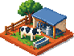

Início: três caminhos
Três jeitos de responder à mesma pergunta. Os números são do mundo de teste do inventário, no dia 1: uma loja em Campinas com 3 de 11 funcionários e arroz, feijão e açúcar esgotados. São esboços para escolher a direção, não a tela final. Escolha uma, misture partes ou recuse as três.
Quem chega no Início e o que quer saber
O Início é a primeira tela cada vez que um amigo abre o jogo. Na maioria das vezes ele volta depois de horas fora, e o mundo andou sem ele. Em ordem de urgência, ele quer saber:
Regras da spec 008 que valem para os três: os alertas precisam ser verdadeiros (hoje o Início não olha a equipe nem os produtos esgotados fora da prateleira). Vendas de hoje e caixa livre ficam só na barra do topo. Os cartões dos negócios moram em Negócios; o Início mostra um negócio só quando ele pede decisão. Todo alerta traz o botão que resolve.
Caderno do dia
O Início vira a lista de tarefas do dono, escrita num papel pautado. Cada linha é um problema com a perda estimada em reais e o botão que resolve. Ao lado, o recibo do que aconteceu enquanto você esteve fora e a régua de porte da empresa. Embaixo, um próximo passo só.
Ganha
- O mais claro: em 3 segundos se sabe o que fazer.
- A perda em R$ ordena a lista sozinha.
- Cresce bem com 10 negócios.
Perde
- Menos cena; o jogo aparece menos.
- Com tudo em dia, sobra pouco na tela.
Silva Participações
Dia 1 · quarta · 00h no jogoHoje você precisa
3 coisas, a 1ª é a que mais custa



Abra um negócio de produção
Ordenha em Sorocaba: R$ 517 mil, se paga em ~38 dias e abastece a sua loja de leite.
Rua dos negócios
No alto, uma rua em pixel art com os seus prédios lado a lado. Cada problema é um bilhete preso com fita no prédio que tem o problema, e os caminhões a caminho andam na estrada. Embaixo, os mesmos problemas em lista, com os botões. A rua mostra todos os negócios, mas só em miniatura; os detalhes ficam em Negócios.
Ganha
- Cara de jogo e identidade própria.
- Ver o império crescer na rua é recompensa.
- Usa a pixel art que já temos.
Perde
- Com mais de 6 negócios, a rua precisa rolar ou agrupar.
- Precisa de arte nova por tipo de prédio.
- Ocupa metade da tela antes da primeira ação.
Silva Participações
Dia 1 · quarta · 00h no jogoLoja Campinas
Arroz, feijão e açúcar
3 de 11
abrir negócio

Jornal da manhã
O Início é a primeira página de um jornal do dia. A manchete é o problema que mais custa; as colunas trazem o seu negócio, o mercado e o mundo (prefeituras, rivais). É o começo do mural de notícias que o roteiro já pede, e dá vida ao mundo lá fora.
Ganha
- A identidade mais forte e mais nossa.
- Abre espaço para o mundo vivo: notícias e ranking.
- Cada volta ao jogo tem uma "edição" nova.
Perde
- Mais leitura; o botão fica menos óbvio.
- As notícias do mundo precisam de engenharia (o John).
- Risco de virar texto genérico se as notícias forem fracas.
Edição das 00h
Gazeta da Silva
Silva ParticipaçõesEmpresa pequena
Loja Campinas fica sem arroz, feijão e açúcar
Sem os três, a loja deixa de vender cerca de R$ 25 mil por dia (estimativa). Os fornecedores de Campinas têm estoque e entregam no mesmo dia.
Esgotado
Seu negócio
Falta gente no balcão3 pessoas atendem 150 de 532 clientes por rodada. Contratar 8 custa R$ 1,2 mil por dia.
Contratar 8Mercado
Leite 18% abaixo do preço justo82 empresas vendem; bom momento para encher o armazém da loja.
O mundo
11 prefeituras compram açoR$ 75 mil cada, por 12 t. Ninguém propôs ainda. Rival Planalto Comercial procura 65 mil garrafas de óleo.
A, o Caderno do dia, como base. Ele resolve o que o inventário mostrou de pior: o Início precisa dizer a verdade e o botão certo em 3 segundos, para 1 ou para 10 negócios. Da B eu traria só a arte de cada problema; da C, guardaria o jornal para o mural de notícias, quando o mundo tiver notícias de verdade (isso é engenharia do John). A primeira hora do amigo novo pesa mais que a cena.
- Desenho fino da direção escolhida, em computador e celular, com os estados: tudo em dia, primeiro dia, depois de horas fora e 10 negócios.
- Construção no jogo, com os alertas novos (equipe, esgotados fora da prateleira, procura sem atender) e testes de navegador.
- Revisão independente e a sua aprovação.